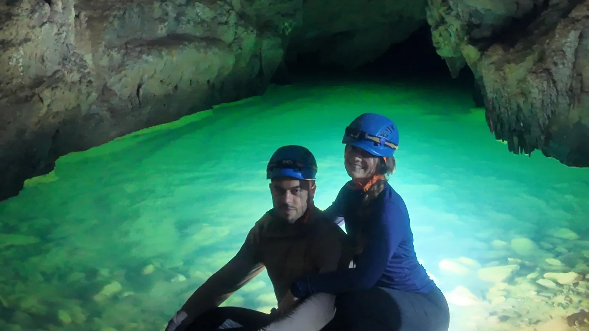
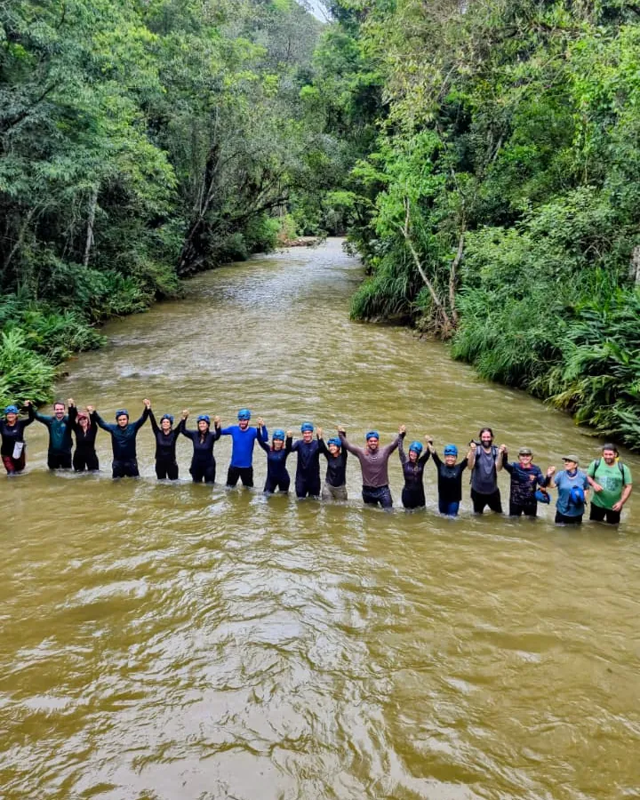
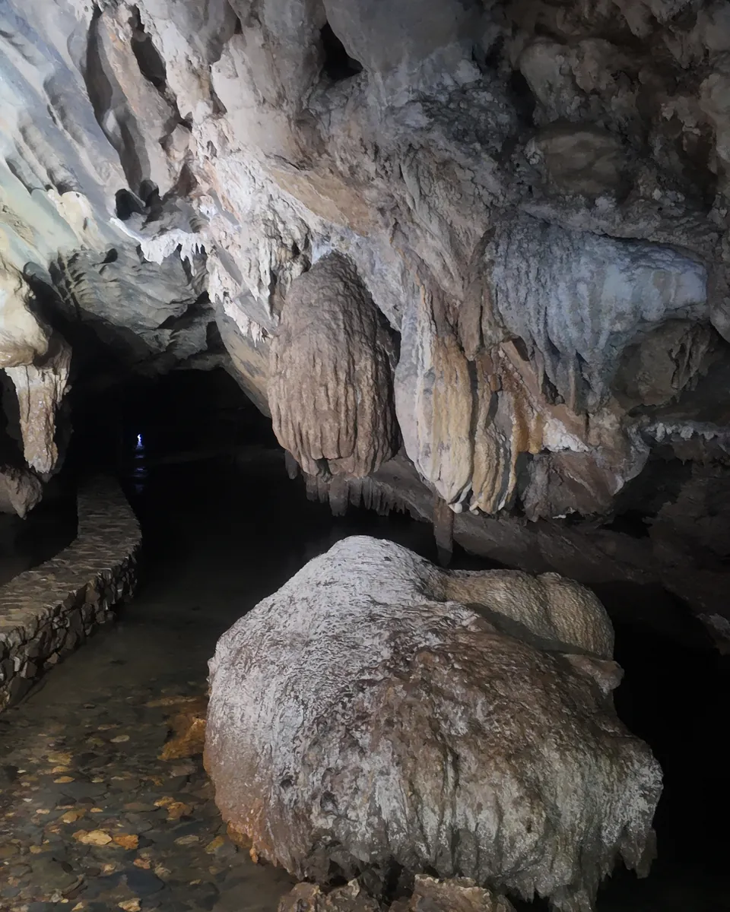
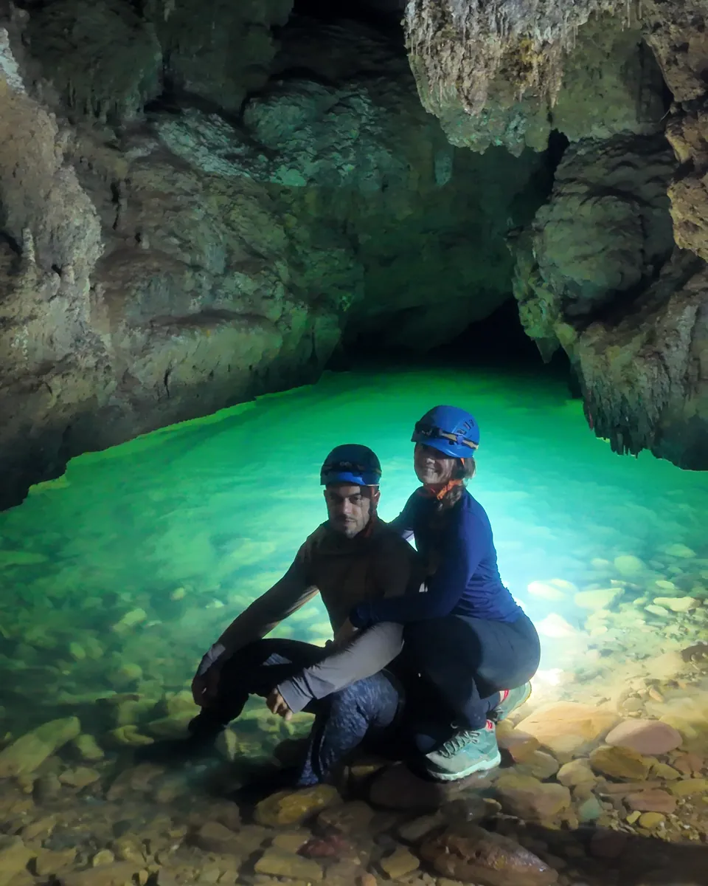
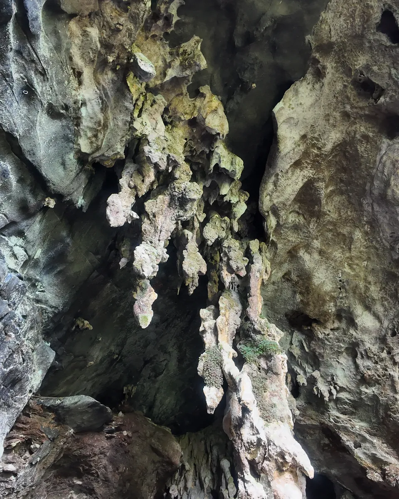
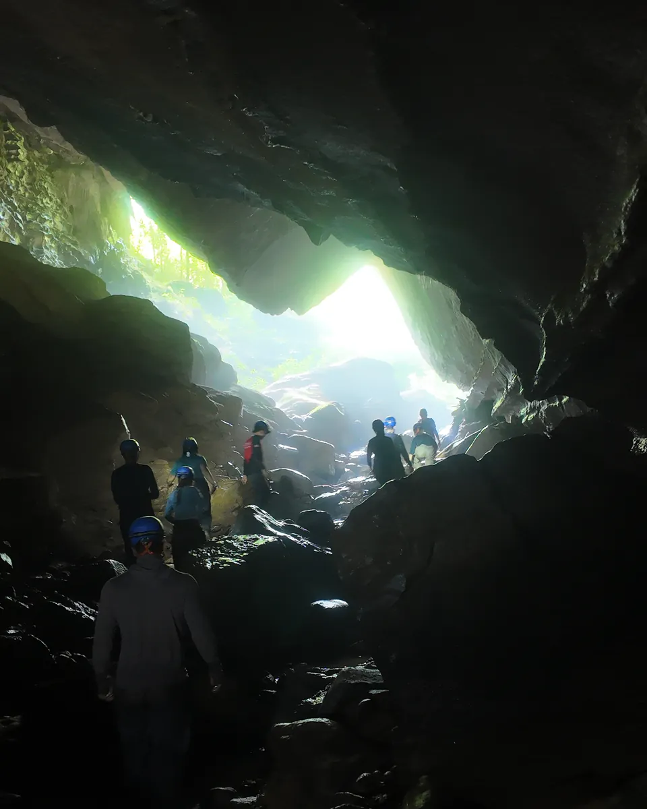
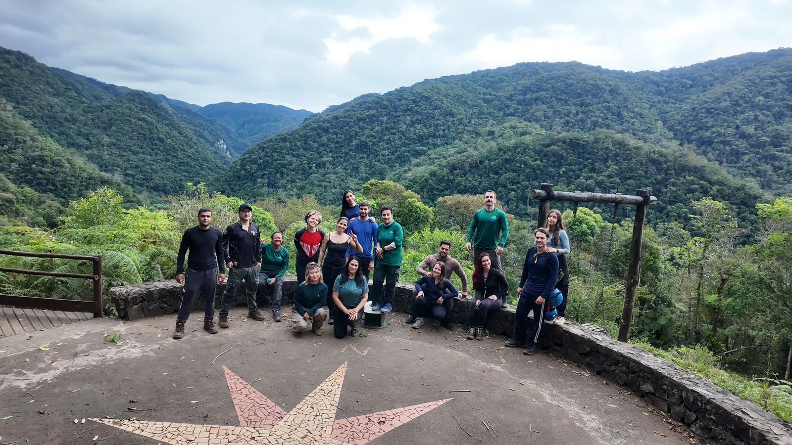
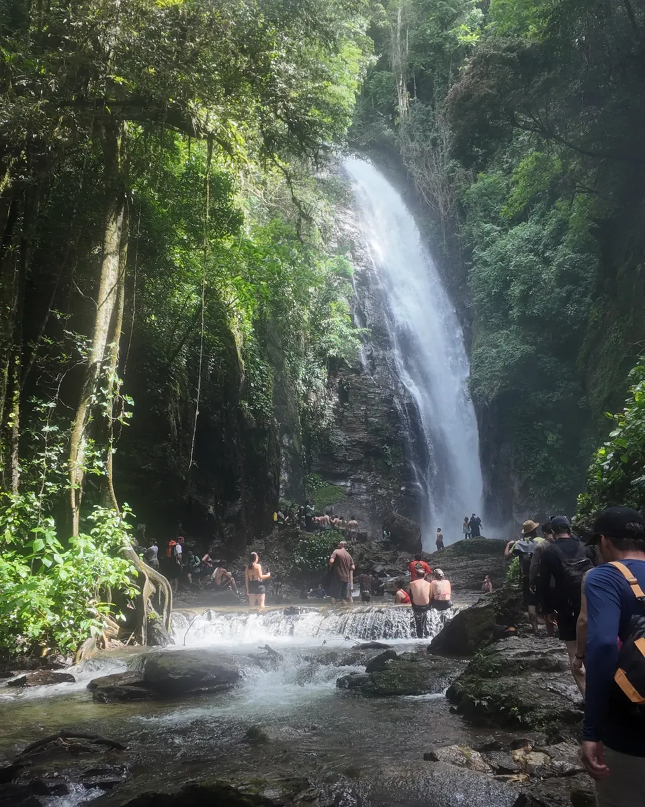
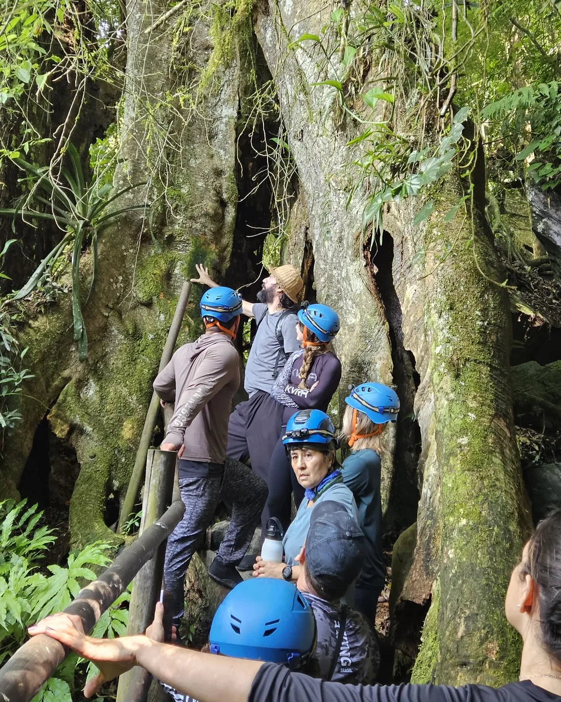

PETAR em 3 dias: cavernas, cachoeiras, os guias da Rupestre e onde ficar
Nosso PETAR saindo de Rio Preto com a Verde Viagens: núcleos Santana, Vale das Ostras e Ouro Grosso, os guias da Rupestre Petar e a pousada com café da manhã e lanche nos passeios.
Resumo rápido
- Onde
- PETAR (Parque Estadual Turístico do Alto Ribeira), no Vale do Ribeira, sul de SP
- Como fomos
- Excursão da Verde Viagens, de van, saindo de São José do Rio Preto às 20h
- Roteiro
- Dia 1: Santana · Dia 2: Vale das Ostras · Dia 3: Ouro Grosso
- Guias
- Rupestre Petar, com os guias Pedro e Edi: incríveis
- Onde ficamos
- Pousada Rupestre Petar: café da manhã incluso e lanche nos passeios
O PETAR estava na nossa lista havia muito tempo: cavernas, rios de água clara, cachoeiras e Mata Atlântica de verdade, daquelas que fecham por cima da trilha. Desta vez a gente não foi de carro: foi de van, com uma turma inteira, e foi uma das viagens mais divertidas que a gente já fez. Neste post contamos como foi cada dia, quem cuidou da gente por lá e onde ficamos.
Como a gente foi: Verde Viagens, saindo de Rio Preto
A gente foi com a Verde Viagens, de São José do Rio Preto, e fez toda a diferença: a agência deu todo o apoio, passou as informações antes da viagem e acompanhou o grupo do começo ao fim. A gente só precisou se preocupar em aproveitar.
A saída foi de van, de Rio Preto, às 8 horas da noite. Viajamos durante a noite e o primeiro dia já começou no parque. Foi uma galera grande, e a turma entrosou rápido: muita risada na van, nas trilhas e dentro das cavernas.

Dia 1: Núcleo Santana
O primeiro núcleo que exploramos foi o Santana. Capacete na cabeça, lanterna acesa e trilha no meio da mata até a boca das cavernas. Lá dentro o mundo muda: escuro total, barulho de água e formações de rocha que levaram milhares de anos para se formar.

E foi numa dessas cavernas que tiramos a nossa foto preferida da viagem: a gente sentado na beira de um lago de água tão clara que, com a luz das lanternas, ficou azul-turquesa.



No fim do dia ainda deu tempo de parar num mirante com vista para o vale, todo coberto de mata, para a foto com a turma.

Dia 2: Vale das Ostras
No segundo dia fomos para o Vale das Ostras. Saímos da pousada por volta das 9h da manhã e, desta vez, não precisou de capacete: o dia era de trilha e cachoeira, não de caverna. Antes de sair, todo mundo passou repelente e protetor solar, e lá fomos nós.
O destino era a cachoeira, mas o trajeto até ela foi, sem exagero, a coisa mais linda que a gente já viu. É tudo Mata Atlântica fechada, daquelas em que as árvores se fecham por cima da trilha. No caminho tem várias quedinhas d'água, pontes para atravessar e trechos de água trekking: a gente anda dentro do rio, entre as pedras, molhado, subindo e descendo. A gente ia parando a todo momento para olhar, fotografar e respirar aquele lugar.
Vimos cobra e aranha pelo caminho, mas é tudo muito seguro: os guias estão sempre atentos, mostram os bichos de longe e orientam o grupo. Na metade do trajeto paramos para almoçar o lanche que a pousada entregou, e isso deu a energia que faltava para continuar até o fim.
E o fim é o deslumbre: a cachoeira, alta, no meio da mata, com poço para se refrescar. É ela que dá todo o diferencial do dia.

Num dos pontos do caminho tem um poço fundo onde dá para pular. O Guilherme se arriscou, e a nossa guia e um outro rapaz do grupo também pularam. Eu (Andressa) preferi ficar do lado de fora, filmando o Guilherme.
Nesse dia a gente perguntou ao guia qual era a comida típica da região, e a resposta foi na hora: palmito na brasa. Fomos então numa palmitaria pequenininha que tem lá, onde o palmito é assado na brasa. Eles cortam o palmito ao meio e servem de dois jeitos: uma metade com queijo e a outra com azeite e limão. É muito bom! Um palmito sai por volta de R$ 80 e dá para duas pessoas petiscarem. Pelo que a gente lembra, lá só tem palmito mesmo, e nem precisa de mais nada.
Dia 3: Núcleo Ouro Grosso
O último dia foi no Núcleo Ouro Grosso, e foi o dia em que a gente mais se molhou. O passeio foi para conhecer uma cachoeira que fica dentro de uma caverna, e que é liberada para o turismo. Ver uma cachoeira caindo lá dentro, no meio da rocha, é uma cena que não dá para esquecer.
No final do dia ainda deu tempo de fazer boia cross com a Boia dos Primos, que fica bem do lado da pousada: descemos de boia uns 3 km do Rio Betari. Pagamos R$ 45 por pessoa, e foi o jeito perfeito de fechar a viagem, rindo e se molhando mais um pouco.
E, colado na pousada, tem um sorvete caseiro que vale a parada: é o próprio dono que faz, com as frutas da região. Bem artesanal, bem gostoso, bem gourmet.
Eu (Andressa) pedi o de juçara, uma fruta nativa da Mata Atlântica que o pessoal de lá chama de "o açaí deles". O sabor é bem neutro: docinho, mas suave, bem diferente do açaí que a gente conhece em Rio Preto, que é bem doce. Já o Guilherme pediu um sorvete com pimenta: tem o doce do sorvete e, logo depois, uma ardência bem gostosa da pimenta. Vale provar os dois.
Depois disso foi só trocar a roupa molhada e pegar a van de volta para Rio Preto, cansados e felizes.
Os guias da Rupestre Petar: Pedro e Edi
As cavernas do PETAR são visitadas com monitor ambiental, e os nossos foram os guias da Rupestre Petar. São incríveis. Conhecem cada trilha e cada caverna, explicam como as formações surgiram, contam histórias do lugar e cuidam do grupo o tempo todo, principalmente nos trechos com água e pedra escorregadia.
Um agradecimento especial aos nossos guias, o Pedro e o Edi, que levaram a gente com paciência, bom humor e muito conhecimento. Se você for, peça para ir com eles.

Onde ficar: Pousada Rupestre Petar
A gente ficou na Pousada Rupestre Petar, que também é incrível. Ficar na mesma casa dos guias facilita tudo: você sai para os passeios direto da pousada.
- Café da manhã incluso
- Lanche entregue para levar nos passeios
- Os guias da Rupestre saem com o grupo direto da pousada
O que levar para o PETAR
- Roupa que pode molhar e sujar: nas cavernas e travessias você vai se molhar e se sujar de barro. Calça leve e camiseta de manga comprida ajudam.
- Tênis ou bota com boa aderência para as cavernas e uma sapatilha de água para o dia de cachoeira e água trekking, quando as pedras escorregam muito.
- Troca de roupa completa e um saco para guardar a roupa molhada.
- Garrafa de água, protetor solar e repelente.
- Capacete e lanterna de cabeça: no nosso passeio, o equipamento veio com os guias. Confirme com a sua agência ou pousada.
- Roupa de banho para as cachoeiras.
Perguntas frequentes sobre o PETAR
Precisa de guia para visitar o PETAR?
Para as cavernas, sim: a visita é feita com monitor ambiental credenciado. A gente fez tudo com os guias da Rupestre Petar, que levam o grupo, explicam cada lugar e cuidam da segurança.
Onde fica o PETAR?
O PETAR (Parque Estadual Turístico do Alto Ribeira) fica no Vale do Ribeira, no sul do estado de São Paulo, entre os municípios de Iporanga e Apiaí.
Dá para ir ao PETAR de excursão saindo de São José do Rio Preto?
Dá. A gente foi com a Verde Viagens, de Rio Preto: saída de van às 20h, viagem durante a noite e três dias de passeios no parque, com todo o apoio e acompanhamento da agência.
Onde ficar no PETAR?
A gente ficou na Pousada Rupestre Petar e recomenda: o café da manhã está incluso e, nos dias de passeio, eles entregam lanche para levar.
Quantos dias ficar no PETAR?
Três dias foi um bom tempo para conhecer núcleos diferentes sem correria: no nosso caso, Santana no primeiro dia, Vale das Ostras no segundo e Ouro Grosso no terceiro.

Andressa e Guilherme
Casal por trás do Estrada em Dois. Viajamos pelo Brasil, Argentina e Chile e mostramos tudo no YouTube.